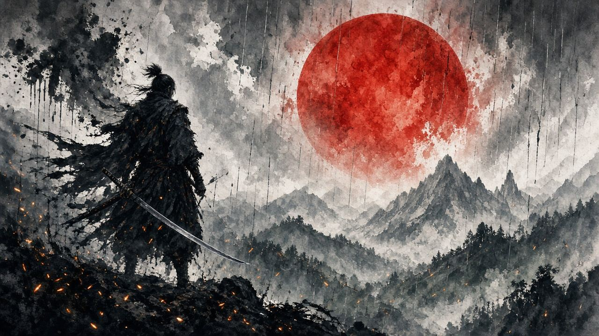

第一條血 · 0:00–1:37
- 開場白白砍。之後槍連、槍插地、綠鈎。
- 爆竹窗鎖 0:00–0:37（嚇馬片一階段）。
- 紅字：突刺，或者槍插地拖過來。


爆竹同鈎索攻擊係呢場嘅兩件工具。見切有就用，冇就紅字向後跑，一樣過。
一階段／二階段用片主章節切開。鈎索擊同招式合集用成條短片。開頁自動嵌 youtube-nocookie。
預兆：Kritical Slicer 章節：0:00 一階段，1:37 入二階段。純彈、無傷
槍連彈到佢收。彈完唔追馬。馬會自己衝返嚟
0:00–1:37 · 0DnhPyQ1R7o @ 0:00 → · Kritical Slicer · 章節 VERIFIED
預兆：1:37 起。馬跳、槍更密，純彈片打到完
同一套：彈、唔追、等綠鈎。跳砸唔好躲去馬屁股
1:37–3:24 · 0DnhPyQ1R7o @ 1:37 → · Kritical Slicer · 章節 VERIFIED
預兆：爆竹片章節 0:00–0:37。馬驚，人會企定
槍收招或者貼到身先爆。嚇完三至四刀，即刻格返
0:00–0:37 · xZvVk7EF4hQ @ 0:00 → · Kritical Slicer · 章節 VERIFIED
預兆：0:37 起仍然用爆竹。二階段冇免疫
跳砸之後、或者佢收槍，再嚇一次。精神印不夠就留俾二階段
0:37–1:23 · xZvVk7EF4hQ @ 0:37 → · Kritical Slicer · 章節 VERIFIED
預兆：馬跑開，頭上出綠點
勾過去。有鈎索攻擊就落地前按攻擊，白斬一輪。冇技能就勾完即格，唔好企喺槍下發呆
0:00–0:20 · y-Dgt3PEt44 @ 0:00 → · Flame of Ambition · 鈎索擊全片
預兆：GameWith 招式片：突刺、槍拖地、插地硬直
紅字最穩係向後跑。突刺先可以見切（平田忍殺獵人教過）。槍插地：三刀然後格
0:00–1:32 · QbeWiHNB9O4 @ 0:00 → · GameWith · Tips & Movesets 全片
預兆：Tyrannicon：開場白免費刀、全程格、槍插地三刀、紅字後退、綠鈎、爆竹、二階段馬跳
未熟彈就全程格。架勢條裂開都來得及，佢槍慢。三刀之後一定格返
0:00–2:54 · yBiWErimUqw @ 0:00 → · Tyrannicon · 安全打法全片
FightinCowboy 由買爆竹、講兩種危技，講到實戰。單招秒數喺上面卡片。
爆竹商人路線、兩種危技、實戰。全片 4:37 · 鎖窗 0:00–4:37
階段秒數跟 Kritical Slicer 描述入面嘅 Chapters，唔係估。危技未有獨立於合集之外嘅單招片，所以突刺同拖地掃鎖喺 GameWith 全片同 Tyrannicon 全片。
招式唔清楚、想加邊個 Boss、有錯漏——丢句說話。留言經 Netlify Forms 直達網主信箱／後台，唔再只係本機保存。
你嘅意見已送出俾網主。想再講可以繼續填。